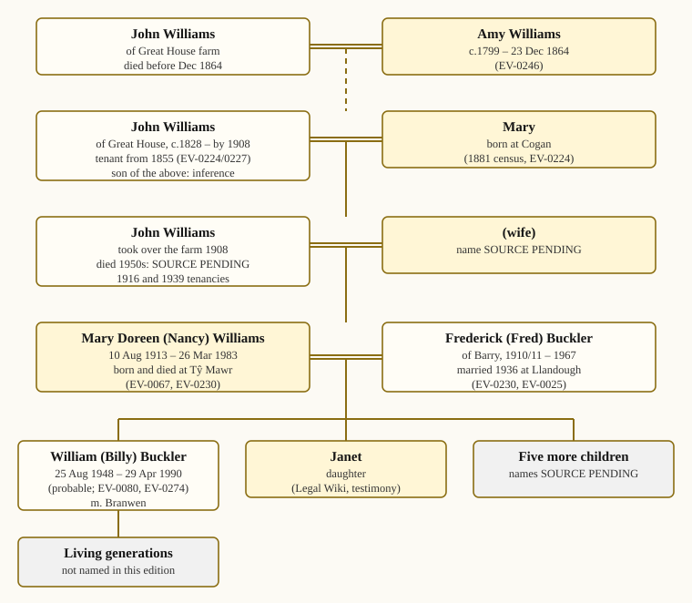

The family tree
The tree below shows each person and the record that places them. A dashed line marks a link that the record supports but does not prove.


The Williams–Buckler family of Tŷ Mawr, from cited records. Gaps are marked SOURCE PENDING.
Person |
Dates |
Where the record places them |
|---|---|---|
John Williams (the elder) |
died before Dec 1864 |
Husband of Amy; “of Great House farm” (death notice, 1864, EV-0246) |
Amy Williams |
c.1799 – 23 Dec 1864 |
Widow of John Williams of Great House farm (EV-0246) |
John Williams of Great House |
c.1828 – by Oct 1908 |
Farmer, 1881 census (EV-0224); directories 1868–1901 (EV-0225); tenant since 1855 (EV-0227) |
Mary Williams |
born Cogan; dates SOURCE PENDING |
Wife of John Williams, 1881 census (EV-0224) |
John Williams |
died 1950s (date SOURCE PENDING) |
Father of Mary (Nancy); took over the farm in 1908; 1916 and 1939 tenancies (EV-0014, EV-0023) |
Mary Doreen (Nancy) Williams |
10 Aug 1913 – 26 Mar 1983 |
Born and died at the farmhouse (EV-0067); married 1936 (EV-0230) |
Frederick (Fred) Buckler |
1910/11 – 1967 |
Of Barry; married Nancy 1936 (EV-0230); farm manager from 1944; tenant from 1949 (EV-0025) |
William Beverley (Billy) Buckler |
25 Aug 1948 – 29 Apr 1990 (probable) |
Son of Nancy and Fred; defendant, BP Properties Ltd v Buckler (EV-0080); probate calendar (EV-0274) |
Branwen |
living |
Wife of William; lived at the farm until 1988 |
Seven children of Nancy and Fred |
Among them William and a daughter, Janet; the others SOURCE PENDING |